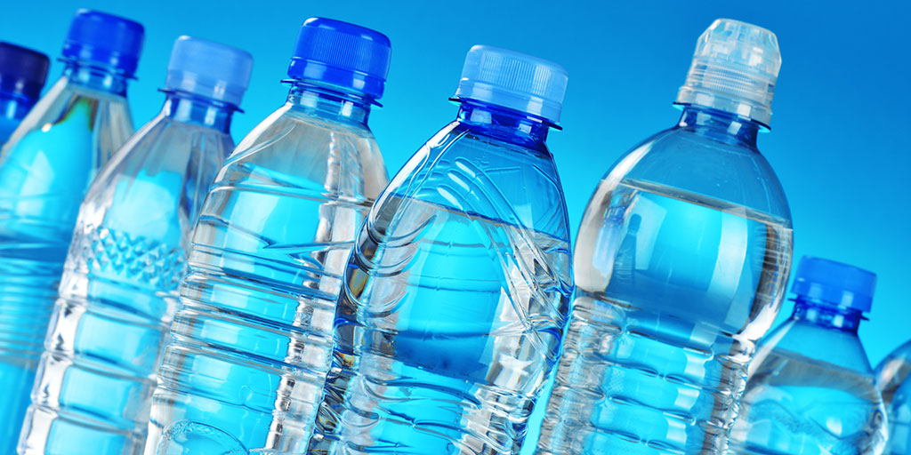

Health Risks of Drinking Water from Plastic Bottles
According to EarthDay.org, Americans purchase about
50 billion water bottles per year!
Bottled water presents a significant issue, impacting both the well-being of our environment and our own health.
Drinking water from plastic bottles can pose a threat not only to the environment but also to human health. Many consumers buy plastic bottled water because of their desire for safer and cleaner water. However, according to research, there could be contamination by microplastics and harmful chemicals from plastic packaging. Tap water, subject to rigorous testing and regulation, might be a better option than plastic bottled water.